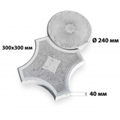
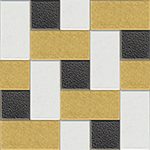

Настройки окна
❮ назад
Увеличить/Уменьшить
Развернуть/Свернуть
Крыша
❮ назад
❮ назад
Красная металочерепица
Черная металочерепица
Окна
❮ назад
❮ назад
Белые
Коричневые
Темно-коричневые
Двери
❮ назад
❮ назад
Белые
Коричневые
Темно-коричневые
Фасад
❮ назад
❮ назад
Шпаклевка
Рваный камень
Колотый кирпичик
Ростовский камень
Фасадная гладкая
Наборная цокольная
❮ назад
❮ назад
Белая
Оттенок извести
Молочный
Песочный
Кофейный
Дубовый
Горчичный
Янтарный
Темно-оранжевый
❮ назад
❮ назад
черный
❮ назад
❮ назад
белый
❮ назад
❮ назад
Песочный
❮ назад
❮ назад
Мр.перелив песочный
❮ назад
❮ назад
Мр.перелив песочный
Цоколь
❮ назад
❮ назад
Рваный камень
Ростовский камень
Колотый кирпичик
Наборная цокольная
❮ назад
❮ назад
черный
❮ назад
❮ назад
белый
❮ назад
❮ назад
песочный
❮ назад
❮ назад
Мр.перелив песочный
Тротуарная плитка
❮ назад
❮ назад
Кирпичик №Т-30
Ориент №Т-53

Коло №Т-56
Ромб №Т-59
Восьмиугольная
Инсбрук
❮ назад
❮ назад
белый + черный
белый + коричневый
❮ назад
❮ назад
С кубиком
Ступенькой
Квадратом
❮ назад
❮ назад
Белый кирпичик + черный кубик
Серый кирпичик + черный кубик
Песочный кирпичик + черный кубик
Желтый кирпичик + черный кубик
Красный кирпичик + черный кубик
Коричневый кирпичик + черный кубик
Красный / желтый кирпичик + черный кубик
Коричневый / песочный кирпичик + черный кубик
Коричневый / песочный кирпичик + красный кубик
Коричневый / желтый кирпичик + черный кубик
Серый / белый кирпичик + черный кубик
Черный / желтый кирпичик + красный кубик
Коричневый / желтый кирпичик + красный кубик
Коричневый / серый кирпичик + черный кубик
Темнокоричневый / желтый кирпичик + красный кубик
Белый / песочный кирпичик + черный кубик
Темнокоричневый / желтый кирпичик + черный кубик
Серый / желтый кирпичик + красный кубик
Серый / желтый кирпичик + черный кубик
Песочный / желтый кирпичик + черный кубик
Белый / коричневый кирпичик + черный кубик
Белый / желтый кирпичик + черный кубик
Коричневый / красный кирпичик + черный кубик
Песочный / желтый кирпичик + красный кубик
❮ назад
❮ назад
белый + коричневый
серый + коричневый
белый + коричневый + песочный
коричневый + песочный
красный + желтый
красный + коричневый
❮ назад
❮ назад
белый + коричневый
серый + коричневый
песочный + коричневый
песочный + белый
красный + желтый
красный + коричневый
❮ назад
❮ назад
серый + красный
серый + коричневый
серый + темнокоричневый
серый+кор. +темнокор.
серый + черный
желтый + красный
красный + черный
красный + темнокоричневый
красный + коричневый
❮ назад
❮ назад
Темнокоричневый+желтый
Красный+желтый
❮ назад
❮ назад
Белый + коричневый + черный
❮ назад
❮ назад
Белый + серый + черный
Готовые решения
❮ назад
❮ назад
Белый+черный
Добавленные слои: